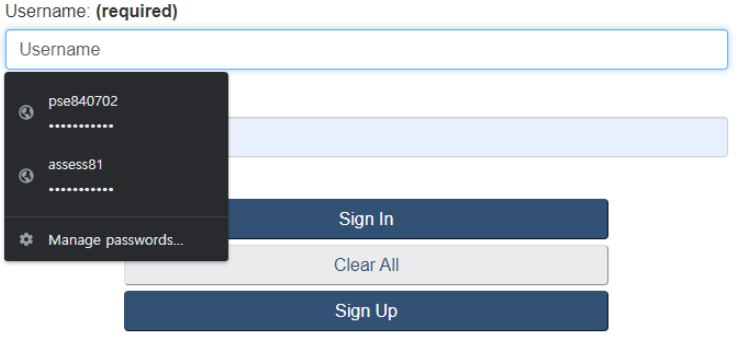
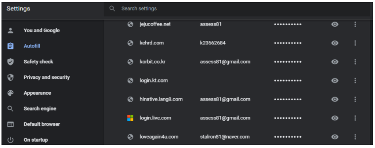

You may have seen a warning message that your account was accessed from a different country you do not know. This was that a hacker tried to access your account by your ID and password hacked. If the site did not send a warning message, it would be a dangerous moment when my account could be misused. Let’s find out why these problems occur and how to avoid them.
If you are a typical Internet user, it will be normal to log in to more than 10 sites such as Facebook, Instagram, and Google. Because it is complicated to manage with different IDs and passwords for various accounts, you may use one ID and three or four passwords. In this case, when one account is hacked, the hacker will attempt to access various online sites using the hacked ID and password. In this process, not only the hacked account but also other accounts with the same password as the account are highly likely to be hacked. Account hacking is a very serious problem because you will have financial loss as well as a block of the account. To prevent such hacking, I will introduce two preventive methods that users can use.
First, it is to prevent hacking by setting a complicated password. Jeff Atwood provides the following guidelines:
- Must be 8-32 characters long
- Must include at least two of the following elements:
- At least one letter(upper or lowercase)
- At least one number
- At least one special character
- Must be different than your previous five Passwords.
- Must not match your User ID
However, no matter how well the password is created, if the hacker uses malicious code or public Wi-Fi, he can leak the password easily. Therefore, We need an additional method.
What’s more important than creating a complex password is to make the password different for all accounts. Even if one account is hacked, other accounts are safe. However, this method has a disadvantage in that password management is very difficult. Since most online sites force password changes at least once a year, it is virtually impossible to manage the passwords ourselves. However, you can easily manage many passwords by using the Password manager that manages users' passwords. I recommend a password manager provided by Google. It's free if you only use the logged-in Chrome browser. Also, you can use it on many devices and the way to use is very simple. As shown in the picture below, the account ID and password once logged in are automatically saved. Then you can call it anytime.
In addition, if you enter the Mange passwords setting, you can easily manage your password as shown in the picture below.
As hacking methods have become more sophisticated, password management is essential. If you have had trouble managing it, I recommend that you try the method introduced in this article.